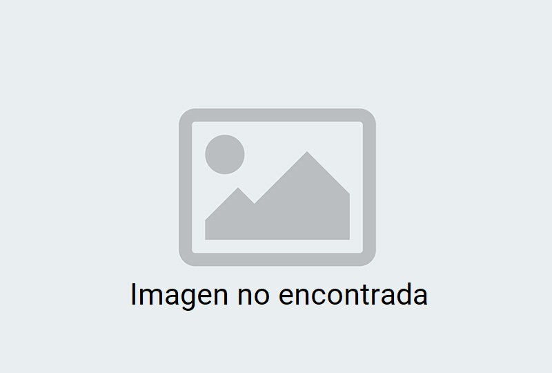

<ngx-loading-bar [fixed]="false" color="#126E82" height="4px" [includeSpinner]="false" > </ngx-loading-bar>
<span *ngIf="postCount">Nro. de publicaciones: {{postCount}}</span>


  <div class="container">
    <section class="card-holder">
      <mat-card class="card mat-elevation-z3" *ngFor="let post of posts">
        <mat-card-header>
        <div mat-card-avatar class="header-image" style="background-image: url('{{post._embedded.author[0].avatar_urls[96]}}');"></div>
          <mat-card-title>{{post._embedded.author[0].name}}</mat-card-title>
          <mat-card-subtitle *ngIf="post.modified">{{post.date_gmt| date}}</mat-card-subtitle>
          <button mat-icon-button class="more-button " [matMenuTriggerFor]="menu" aria-label="Toggle menu">
            <mat-icon>more_vert</mat-icon>
          </button>
          <mat-menu #menu="matMenu" xPosition="before">
            <button mat-menu-item (click)="openEdit(post)"  >Editar</button>
            <button mat-menu-item (click)='openDelete(post)'>Eliminar</button>
          </mat-menu>
        </mat-card-header>
      
         
        <mat-card-content style="cursor:pointer;" [routerLink]="['view', post.id]">
          <div [innerHTML]="post.excerpt.rendered"></div>
        </mat-card-content>
        <mat-card-actions style="padding: 0%;">
          <button mat-flat-button disabled>{{post._embedded['wp:term']['0']['0'].name}}</button>
        </mat-card-actions> 
      </mat-card>
    </section>
</div>

<div class="row pb-5">
  <div class="col-md-12 p-5">
    <ngx-spinner
    bdOpacity = 0.9
    bdColor = ""
    size ="medium"
    color = "black"
    type="ball-spin-clockwise"
    >
    <p style="font-size: 20px; color: black">Cargando...</p>
  </ngx-spinner>
  </div>
</div>

<!-- <div class="paginator mat-elevation-z4">
  <mat-paginator [length]="postCount" [pageSize]="4" [pageSizeOptions]="[4, 8, 10, 100]" aria-label="Select page">
  </mat-paginator>
  <div class="row mb-3 mt-3">
    <div class="col-6">
      <button (click)="previous()">Atras</button>
    </div>
    <div class="col-6">
      <button (click)="next()">Siguiente</button>
    </div>
  </div> 
</div>
 -->